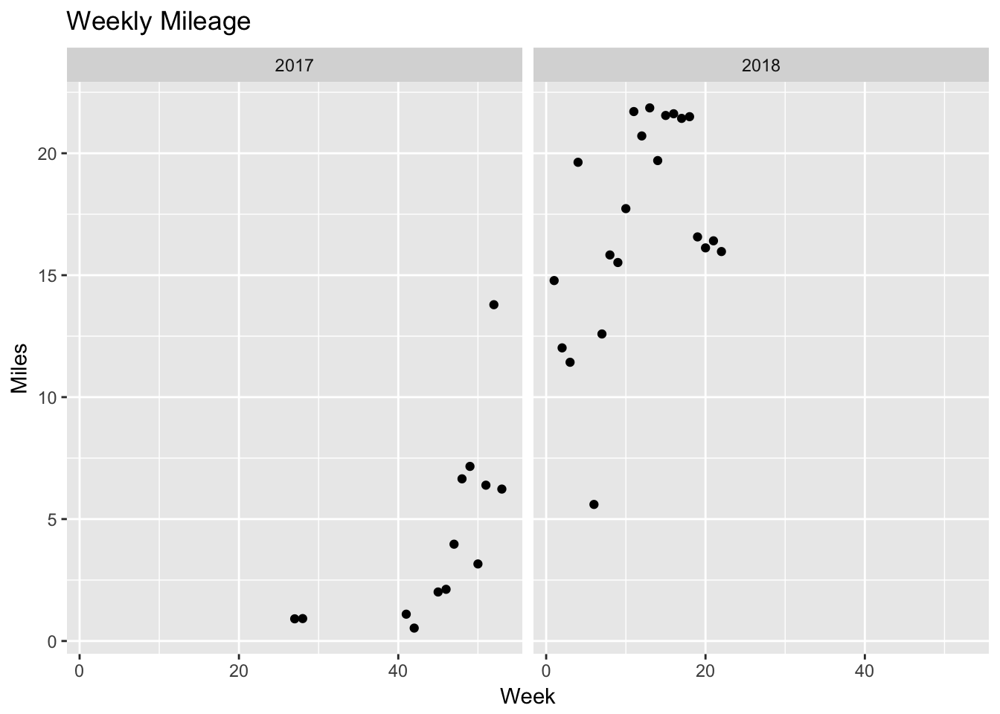
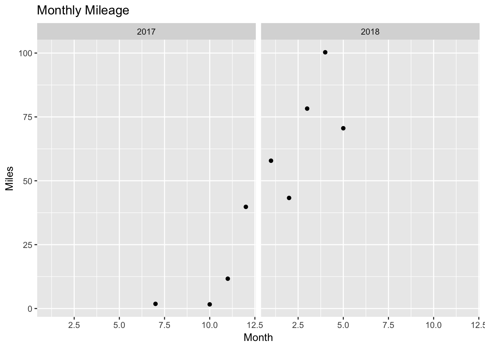
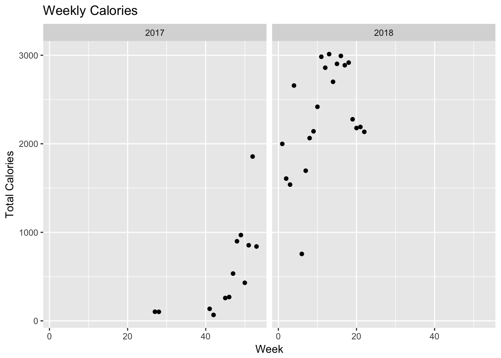
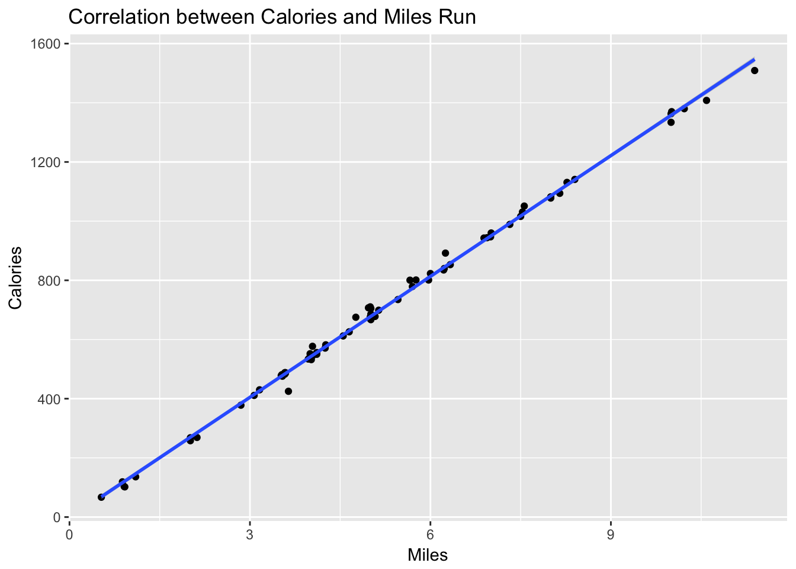

Last summer I started running again after about 8 years off. I had run from my sophomore year of high school until the fall of 2008 when it seemed like I had a meniscus injury and I stopped running. I had run for 17 years, during which the longest break I had taken was maybe a few months. After I stopped, I always missed it, and when my son started training for a Scouting running achievement, I decided I would keep him company. Lo and behold my knee felt ok, so I figured I would keep going. I’ve been using the Runkeeper app to track my runs and decided to look at what the data showed.
suppressPackageStartupMessages(library(dplyr))
library(ggplot2)
suppressPackageStartupMessages(library(lubridate))I downloaded the data from the Runkeeper website. It came as a zip file containing all my GPS tracks plus a processed csv file.
dat <- tbl_df(read.csv("../datasets/cardioActivities.csv"))
glimpse(dat)## Observations: 89
## Variables: 14
## $ Activity.Id <fct> 4ff0c9dd-9713-4a29-98e2-8112c66e2d5c,...
## $ Date <fct> 2018-06-01 16:45:49, 2018-05-30 06:31...
## $ Type <fct> Running, Running, Rowing, Running, Cy...
## $ Route.Name <lgl> NA, NA, NA, NA, NA, NA, NA, NA, NA, N...
## $ Distance..mi. <dbl> 10.00, 5.97, 3.82, 11.39, 8.61, 5.02,...
## $ Duration <fct> 1:32:29, 54:27, 30:08, 1:50:01, 36:10...
## $ Average.Pace <fct> 9:15, 9:08, 7:53, 9:40, 4:12, 9:30, 8...
## $ Average.Speed..mph. <dbl> 6.49, 6.57, 7.61, 6.21, 14.28, 6.32, ...
## $ Calories.Burned <dbl> 1334.0000, 801.0000, 369.6282, 1509.0...
## $ Climb..ft. <int> 142, 125, 0, 96, 0, 160, 59, 8, 160, ...
## $ Average.Heart.Rate..bpm. <int> NA, NA, NA, NA, NA, NA, 167, 152, 146...
## $ Friend.s.Tagged <lgl> NA, NA, NA, NA, NA, NA, NA, NA, NA, N...
## $ Notes <fct> , , , , , , Time trial goal 10k in 54...
## $ GPX.File <fct> 2018-06-01-164549.gpx, 2018-05-30-063...dat$Date <- ymd_hms(dat$Date)Weekly Mileage
There was a lot of data there but I thought the first thing to start with would be my weekly mileage. I wanted to see how that changed over the last year.
dat %>%
# filter(Date < ymd(20180601)) %>%
filter(Type == "Running") %>%
mutate(Week_obs = week(Date), Year_obs = year(Date)) %>%
group_by(Year_obs, Week_obs) %>%
summarize(Mileage = sum(Distance..mi.)) %>%
ggplot(aes(x = Week_obs, y = Mileage)) +
facet_grid( ~ factor(Year_obs)) +
geom_point() +
labs(title = "Weekly Mileage",
x = "Week",
y = "Miles")
Monthly Mileage
In What I Talk about When I Talk about Running by Haruki Murakami, he talks about his monthly mileage, averaging 136-186 miles per month. My monthly averages weren’t as impressive as his.
dat %>%
filter(Date < ymd("20180601")) %>%
filter(Type == "Running") %>%
mutate(Month_obs = month(Date), Year_obs = year(Date)) %>%
group_by(Year_obs, Month_obs) %>%
summarize(Mileage = sum(Distance..mi.)) %>%
ggplot(aes(x = Month_obs, y = Mileage)) +
facet_grid( ~ factor(Year_obs)) +
geom_point() +
labs(title = "Monthly Mileage",
x = "Month",
y = "Miles")
Calories Burned
I tracked my weekly calories burned, expecting that these would be highly correlated with mileage.
dat %>%
filter(Type == "Running") %>%
mutate(Week_obs = week(Date), Year_obs = year(Date)) %>%
group_by(Year_obs, Week_obs) %>%
summarize(Calories = sum(Calories.Burned)) %>%
ggplot(aes(x = Week_obs, y = Calories)) +
facet_grid( ~ factor(Year_obs)) +
geom_point() +
labs(title = "Weekly Calories",
x = "Week",
y = "Total Calories")
Correlation between Calories and Miles
The app estimated calories per run. There was a linear correlation between calories and miles run, as displayed below.
dat %>% filter(Type == "Running") %>%
ggplot(aes(x = Distance..mi., y = Calories.Burned)) + geom_point() + geom_smooth(method = "lm") +
labs(title = "Correlation between Calories and Miles Run",
x = "Miles",
y = "Calories")
This was a very linear relationship, even at the very extremes of the distances run. I fit a linear model and determined that a rough estimate of the energy expenditure rate was 136 calories per mile.
x <- filter(dat, Type == "Running")
model1 <- lm(x$Calories.Burned ~ x$Distance..mi.)
summary(model1)##
## Call:
## lm(formula = x$Calories.Burned ~ x$Distance..mi.)
##
## Residuals:
## Min 1Q Median 3Q Max
## -66.844 -5.463 -1.716 4.585 44.856
##
## Coefficients:
## Estimate Std. Error t value Pr(>|t|)
## (Intercept) -3.6690 4.3352 -0.846 0.4
## x$Distance..mi. 136.1300 0.7617 178.715 <2e-16 ***
## ---
## Signif. codes: 0 '***' 0.001 '**' 0.01 '*' 0.05 '.' 0.1 ' ' 1
##
## Residual standard error: 15.91 on 78 degrees of freedom
## Multiple R-squared: 0.9976, Adjusted R-squared: 0.9975
## F-statistic: 3.194e+04 on 1 and 78 DF, p-value: < 2.2e-16